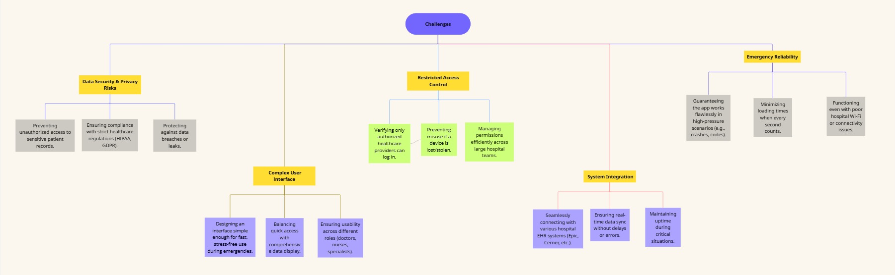
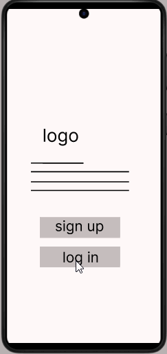

Overview
In hospital emergencies, doctors waste precious seconds navigating clunky record systems while patients need immediate care. Vital data gets buried in multiple tabs, login screens, and outdated interfaces - costing time when every moment matters. HospitalMate fixes this: our app integrates directly with your hospital’s existing system to surface critical patient information in one tap. With prioritized emergency data, voice commands, and a crash-proof design, we put life-saving details at your fingertips exactly when you need them.
Challenges
Pain points
- Cumbersome Access Process
- Inefficient Shift Handovers
- Error-Prone Emergencies
Doctors and nurses struggle with excessive paperwork just to view basic patient records, delaying urgent care.
During shift changes, medical teams waste precious time manually transferring patient updates instead of focusing on care.
Under stress, staff are forced to rely on outdated or incomplete records, increasing the risk of dangerous mistakes
Research Phase
Through direct interviews with medical colleagues, a critical need emerged: healthcare providers require faster, more reliable access to patient data than current paper-based systems or hospital software allow. This solution must:
- Prioritize speed - Delivering vital information instantly during time-sensitive care
- Ensure strict security - Guaranteeing only authorized medical staff can access records
- Simplify workflows - Eliminating unnecessary steps that delay treatment
Persona
Problem statement

User Journey

Ideation phase
How might we?
Information Architecture

Design phase
Paper Wireframes
Digital Wireframes

Low fidelity prototype
High fidelity mockup and prototype
Feature 1
Feature 2
Feature 3
Feature 4
Feature 5
Feature 6
Feature 7
Design system

Testing phase
Usability Testing
Test goals
Validate if the app improves record access speed, reduces errors, and works in emergencies.
Test participants
- 5-10 doctors/nurses (mix of roles: ER, ICU, general ward).
- 2-3 hospital IT staff (to assess technical integration).
Tools
- Screen recorder (e.g., Lookback.io).
- Survey tool (Google Forms/Typeform).
- Prototype (Figma live link or dev build).
Test Scenarios
- Scenario 1: Emergency Access
- Task: “Find Patient X’s allergies and current meds during a mock code blue.”
- Measure: Time taken 15 seconds = pass
- Scenario 2: Shift Handover
- Task: “Update and share a patient’s status with the next shift.”
- Measure: Accuracy of data transferred (no missing info = pass).
- Scenario 3: Offline Mode
- Task: “Access Patient Y’s records with Wi-Fi turned off.”
- Measure: Critical data (last 24hrs) available = pass.
Metrics to track
| Metric | Target | Tool |
|---|---|---|
| Task success rate | ≥90% | Observer notes |
| Average time per task | < 20 seconds | Stopwatch |
| Error rate | ≤5% (e.g., wrong record) | Screen recording |
| User satisfaction | ≥4/5 rating | Post-test survey |
Post-Test Feedback
- Survey Questions:
- “How intuitive was the app during emergencies?” (1–5 scale).
- “What frustrated you?” (Open-ended).
- “Would you use this daily? Why?”
- Interview: 15-minute debrief with participants to dig deeper.